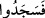

Efendimiz “Melekler nûrdan yaratılmıştır”[240] buyurmuştur. Nûr, tabîatı itibariyle
itâat ve boyun eğmeye müsâiddir. Secde edenlerin ilki, Cebrâîl (a.s.) olup nebîlere ve
hassâten Peygamberimiz’e vahiy indirme göreviyle taltîf edilmiştir. Sonra Mîkâîl, daha
sonra İsrâfîl, ondan sonra da Azrâîl secde etmiş, diğer melekler bunlara tâbi olmuştur.
Başka bir rivâyete göre ilk secde eden İsrâfîl’dir. Secdeden başını kaldırdığında,
Kur’ân’ın baştan sona alnına yazıldığını, görmüştür. Allah’ın emrine uymada diğer
melekleri geçtiğinden bu kerâmet kendisine ikrâm edilmiştir. (  ) lâfzının başındaki
“fâ” meleklerin emre uyma husûsunda gösterdikleri sür’ate işâret etmektedir.[241]
Rivâyete göre melekler secde ettiğinde İblîs, Âdem’e sırtını dönerek secdeden
kaçındı. Melekler yüz veya beşyüz sene secdede kaldılar. Başlarını kaldırdıklarında,
şeytanın hâlâ Allah’ın emrine âsî olarak ayakta durmakta olduğunu gördüler. Şeytan
yaptığına ne pişmandı, ne de secde etmeye niyetliydi. Bunu gören melekler, ikinci kez
secdeye kapandılar. Ki Âdem’e olan secdelerini, bu kez Allah’a yaptılar. İblîs ise
olanları seyretmekte, isyânına devam etmekteydi. Allah Teâlâ, bunun üzerine şeytanın
sıfatlarını, şeklini, hâlini, herşeyini değiştirdi ve onu en çirkin şekle soktu. Bâzı âlimler
İblîs’in yüzü maymun, vücûdu hınzır olan bir hayvan şekline sokulduğunu
söylemektedirler. Meleklikten çıkarılıp hayvan sûretine sokulan İblîs’in aslında nesli
olmaması gerekirdi. Ancak, İblîs kıyâmet gününe kadar mühlet istediği için, neslini
devam ettirme imkânı verildi. Böylece şeytan, “Bir kavim kendini değiştirmedikçe
Allah onları değiştirmez” (er-Ra’d, 13/11) âyetinin hükmünün mazharı oldu.
Haberde nakledildiğine göre Allah tarafından şeytana: “Âdem’in kabrine secde et
tevbeni kabûl edeyim, günahını affedeyim”, denir. O da: “Ben Âdem’in kendisine secde
etmemişken şimdi onun kabrine ve cesedine mi secde edeyim?” der.
Başka bir haberde nakledildiğine göre; Allah Teâlâ her yüz bin senenin başında İblîs’i
cehennemden Âdem’i de cennetten çıkarır, İblîs’e Âdem’e secde etmesini emreder. İblîs
bundan yüz çevirince onu tekrar cehenneme atar.[242]
Böylece İblîs, kendisinin Âdem’den daha üstün olduğuna inanarak Allah’ın emrine âsî
olduğundan kâfirlerden oldu. Durumun böyle olacağını Allah ezelî ilmiyle bilmekteydi.
İblîs’in kâfir olması sâdece emre âsî olmasından değil, aynı zamanda
kibirlenmesindendir. Allah Teâlâ’nın: “Ey iblîs! İki elimle yarattığıma secde
etmekten seni men eden nedir? Böbürlendin mi yoksa yücelerden mi oldun” (Sâd,
38/75) sorusuna İblîs: “Ben O’ndan (Âdem) daha hayırlıyım” diyerek cevap
vermiştir.
Ehl-i sünnet’e göre, bedbaht kimsenin mesûd ve bahtiyar olması da bunun aksi de
mümkündür. Bir kâfir, Müslüman olduğunda o ana kadar geçmiş günahları affedilir.
Allah korusun, bir Müslüman da küfre düşecek olursa o ana kadar işlediği bütün
amelleri boşa çıkar. O gün Allah’ın, İblîs’den başka kâfir olmadığı halde, İblîs’in
“kâfirlerden” olacağını söylemesi ilm-i ilâhî îtibâriyledir. Zira Allah ileride başka
kâfirlerin de olacağını bilmektedir. Nitekim Allah Teâlâ’nın Âdem ve Havvâ’ya